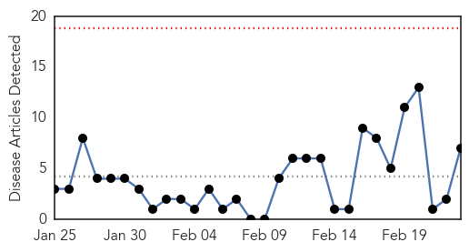
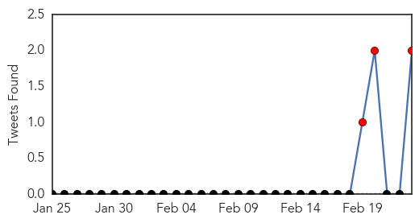

30 Day Trends
Web: 0 alerts, 0 warnings
Twitter: 3 alerts, 0 warnings
Top Articles:
- 0.998
- Interview with Pedro Medrano Rojas, UN Senior Coordinator for the Cholera Response in Haiti
- 0.983
- What's Working: Public Health Progress Since the Haiti 2010 Earthquake
- 0.975
- Health partners appeal for funds to meet South Sudan’s priority needs in 2015 - South Sudan
- 0.940
- It’s sad Kenyans still die from cholera that can be avoided by washing hands - Kenya
- 0.922
- South Sudan: Health partners appeal for funds to meet South Sudan's priority needs in 2015
- 0.868
- Why cholera is spreading fast in Migori and Homa Bay counties - Kenya
- 0.835
- Drug-Resistant Bacteria: Part I
Top Tweets:
- 0.936
- RT: cholera is still a problem in Haiti - cases and deaths every week. @pih haiti saw >1300 cases in Nov/Dec 2014. More res…
- 0.526
- Outbreaks of cholera in the time of Ebola: pre-emptive action needed http://t.co/nS9eoexMyx
Web/News Articles
Tweets
Article Locations

Article Confidences